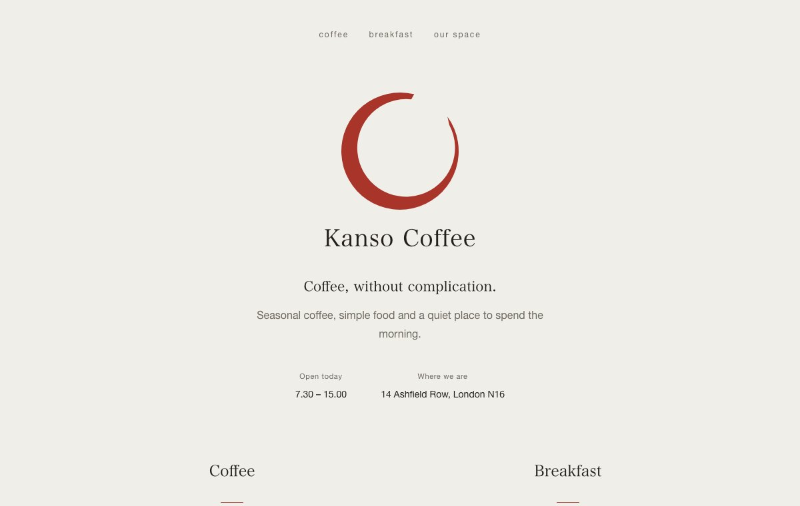

Control panel for MTProxy with Fake-TLS and WEB proxy
TGProxy Panel runs on one VPS and manages Telegram proxies on the rest. It issues keys with Fake-TLS and WEB links, puts a cover website on every server and keeps an eye on all of them. It is open source and free to use.

https://t.me/proxy?server=ams1.proxy-demo.net&port=…&secret=ee…
Every server and key in one panel
The overview starts with a verdict: what is broken and where. Below it are load, latency to Telegram and the server list, and each server opens into its own page with checks, logs and statistics.

Two links for every key
A key gives one person or a group access to your servers. For every server the key is bound to, the panel issues two links with QR codes, and people connect with whichever one works on their network.
Fake-TLS
https://t.me/proxy?server=…&secret=ee…MTProxy that looks like an ordinary website visit from the outside: the TLS handshake uses your server's domain, and that domain serves a real cover site. Every official Telegram app understands these links.
WEB proxy
https://t.me/webproxy?server=…&secret=…A proxy over plain HTTPS on port 443. The server picks the transport that suits the user's network, so the proxy keeps working even where a corporate network blocks WebSocket. Telegram Desktop supports these links, and Android support is experimental.
If a server has backup domains, each one gives the key another Fake-TLS link. A subscription page gathers all of a person's links and QR codes behind a single address.

How to set up MTProxy with Fake-TLS on your own server
You need two VPS: one for the panel and one for the proxy. The proxy takes ports 80 and 443, so it can't share a host with the panel. After that it's five steps.
-
Prepare the servers and domains
- Panel: Ubuntu 22.04+ or Debian 12+, 1 CPU and 1 GB of RAM, a domain with an A record pointing at the server, ports 80 and 443 free.
- Proxy: Ubuntu 22.04+ or Debian 12+ on x86_64, a public IPv4 address, its own domain with an A record, ports 80 and 443 free.
The A records must point at the servers before you install: the scripts check that first.
-
Install the panel
On the panel server, run as root:
curl -fsSL https://raw.githubusercontent.com/greenpandorik/tgproxy-panel/main/install.sh | sudo bashThe script asks for the domain, an e-mail for the Let's Encrypt certificate and the admin credentials, installs Docker if needed and prints the panel address at the end.
-
Connect the proxy server
In the panel, open Servers → Add server and enter a name, the server's domain and an e-mail. The panel gives you a one-time command that is valid for 24 hours. Run it on the proxy server as root:
curl -fsSL https://panel.example.com/api/v1/install/<token>.sh | sudo bashThe script checks DNS, ports and the CPU architecture before it installs anything, then sets up the telemt proxy, the Caddy web server and the panel agent. It gets a certificate, waits for the proxy to report ready and registers the server. A minute later the server shows up in the panel.
-
Issue a key
Access keys → New key: a name, who it's for and which servers. The panel shows the links and QR codes. The key starts working after the next apply on the server, usually within a minute.
-
Upgrade with one command
To upgrade a proxy server:
tgwp-agent upgradeThe agent checks the sha256, replaces only what changed and rolls back if the new version doesn't come up. The panel upgrades with
sudo /opt/tgproxy-panel/install.sh --update.
The full setup guide with screenshots walks through every step and what to do when something goes wrong.
What else the panel does
- A cover site on every server
- Fifteen ready-made sites. When a site is assigned to a server, its block order, class names and file names are reshuffled, so two servers with the same template serve different pages and can't be linked to each other.
- Per-key limits
- Traffic quota, speed, unique IPs and connections. telemt enforces them itself, and the panel never sits in the traffic path.
- Changes without dropped sessions
- New and revoked keys reach the server through telemt's control API without a restart, so live sessions stay up.
- Backup domains
- If an ISP stops letting a server's main domain through, users take the link with a backup domain instead. No reinstall needed.
- Checks and monitoring
- The overview starts with a verdict: what is broken and where. The panel checks DNS, ports, the certificate and Fake-TLS masking, exports Prometheus metrics for a ready-made Grafana dashboard and sends alerts to Telegram.
- Personal and shared keys
- A personal key belongs to one person and is revoked on its own; a shared key goes to a group. You can create a batch of keys from a name template.
- Panel security
- Two-factor sign-in with recovery codes, an activity log, nightly database backups and master key rotation.
- English and Russian
- The interface and the docs come in both languages, and switching takes one click.
Common questions
How is Fake-TLS different from plain MTProxy?
Plain MTProxy encrypts the traffic, but the connection itself doesn't look like anything familiar. Fake-TLS opens with a TLS handshake for your server's domain, so from the outside the connection looks like a visit to a website. That domain really does serve a cover site.
What is a WEB proxy in Telegram?
A newer kind of proxy that Telegram supports through t.me/webproxy links. It runs over plain HTTPS on port 443; the server chooses one of four transports and remembers which one worked on that network. Telegram Desktop supports it, Android does so experimentally and iOS not yet. That's why the panel gives every key both a WEB link and a Fake-TLS link.
How much does it cost?
The panel is free and open source under AGPL-3.0. You only pay for your own servers, and the cheapest VPS is enough for the panel.
Can the panel and the proxy run on the same server?
No. The proxy server needs ports 80 and 443, so the panel and the proxies always run on separate VPS. One panel can manage as many proxy servers as you like.
What if the proxy stops connecting for some users?
Open the server in the panel: "Full server check" and "Check from the panel" show what's wrong with DNS, ports, the certificate or masking. If an ISP stops letting the server's domain through, add backup domains, and every key gets one more Fake-TLS link per domain.
What do the proxy servers run?
telemt by default: an MTProxy written in Rust that handles Fake-TLS, the WEB proxy and the cover site in one process. The panel installs a vetted telemt release and checks its sha256. Older setups can keep the tproxy-server engine with the official MTProxy.